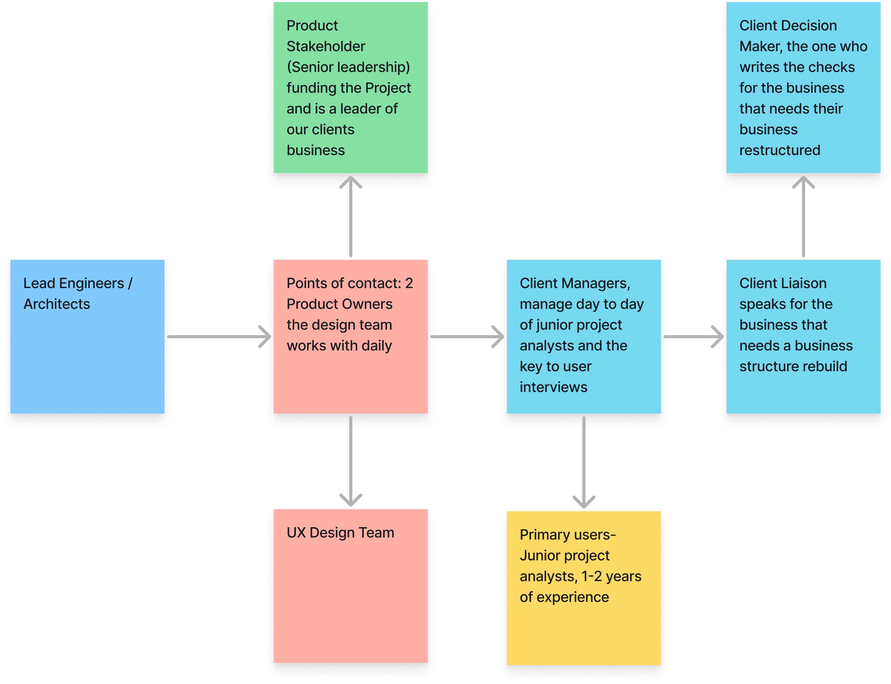
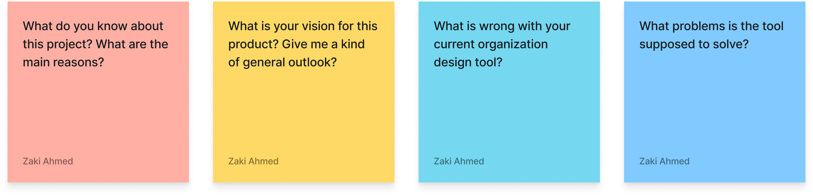
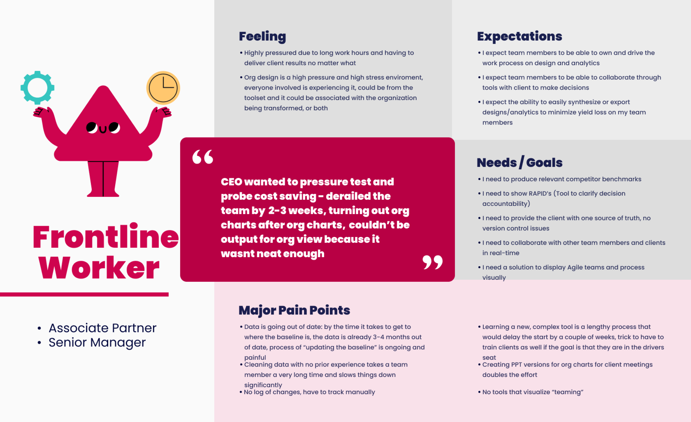
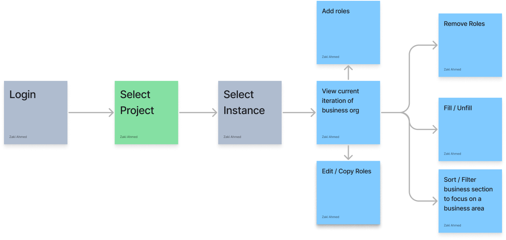
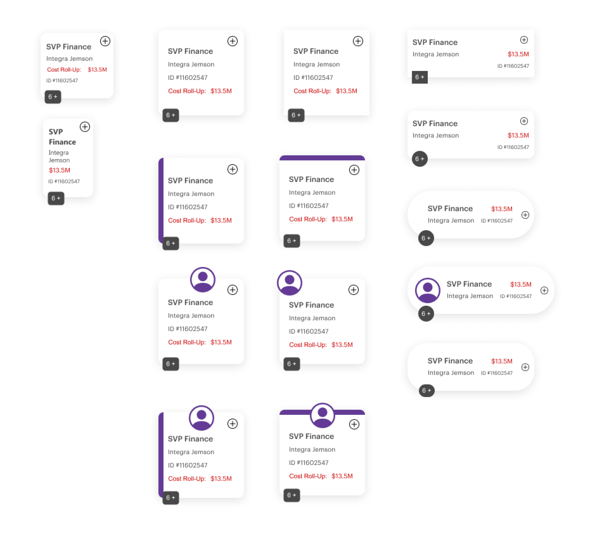
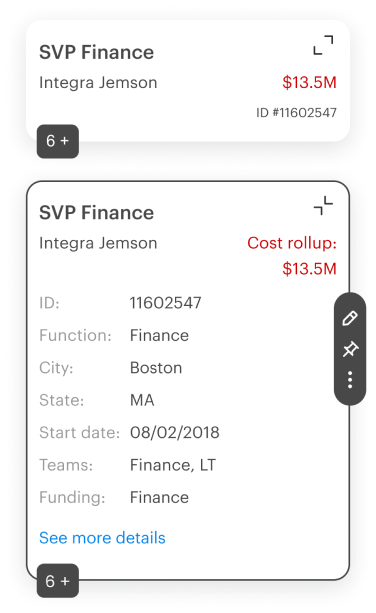
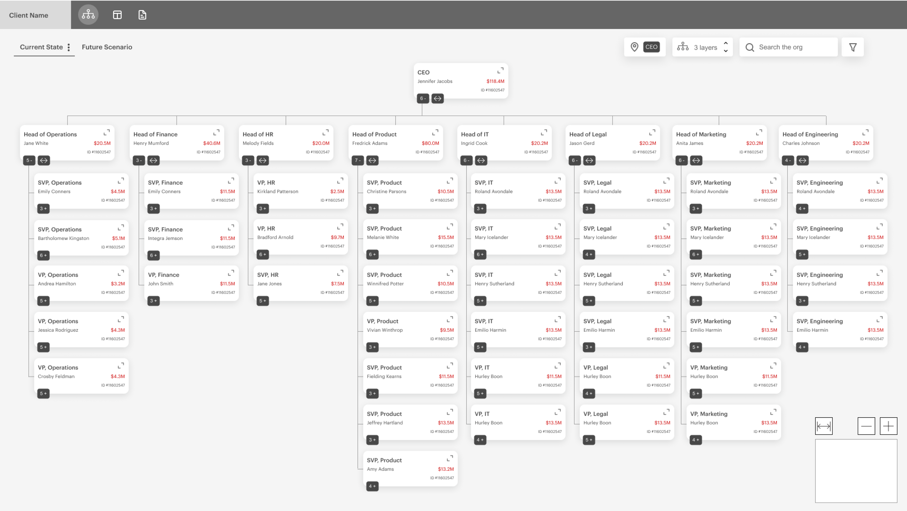
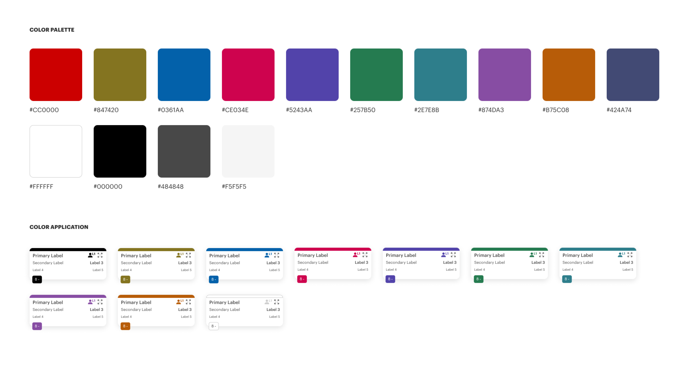
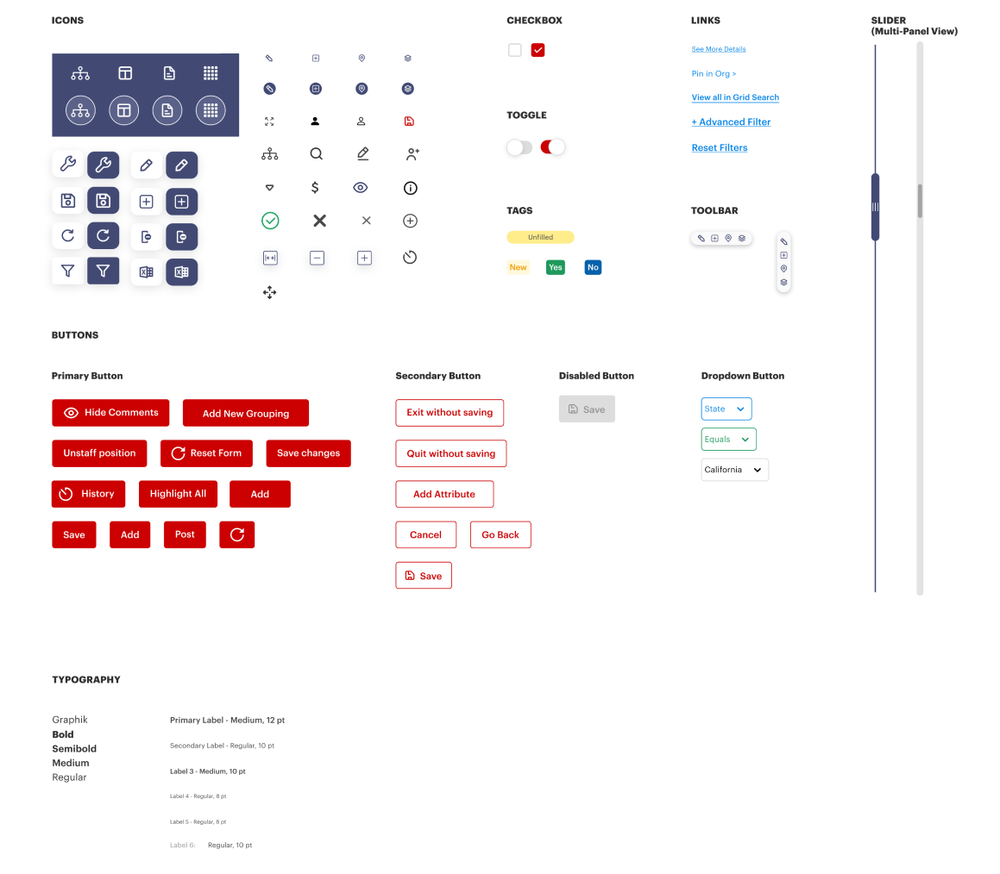
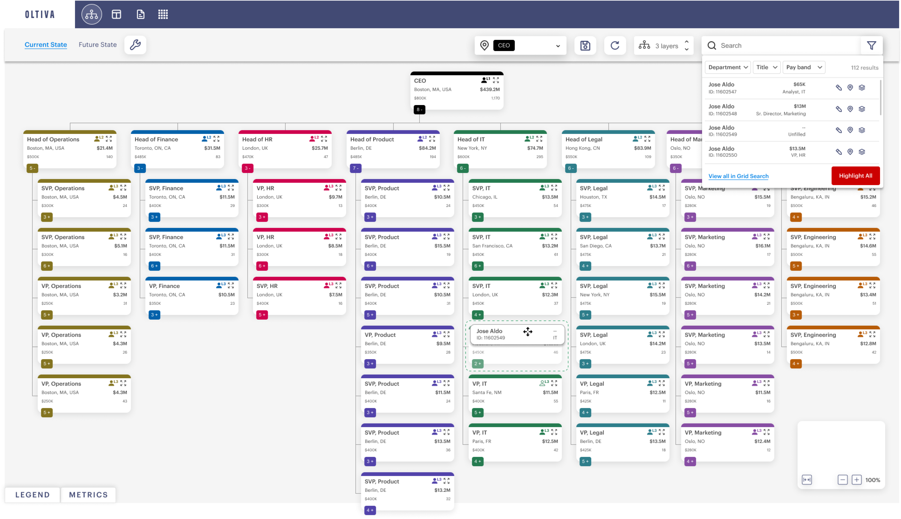

Business Org Builder
overview
A large business management consulting firm is in the business of restructuring business organizations, the tools the junior associates (core user) had were rudimentary and not custom enough to allow users to make informed and complex decisions. This tools goal is to allow freedom of structure and visibility of an org with versioning for users to make quality decisions and collaborative business org structures. What is shown here is a Phase 1, this project went through 3 major phases but due to legal agreements this is what I am allowed to showcase.
problem
How can we design a tool for business management associates to rapidly design and restructure business organization structures with profitability at the forefront.
A large business management consulting firm has a time, versioning and user experience problem with junior associates who's job is to optimize and rebuild a businesses organizational structure due to the current simplistic application the junior associates use to design business org’s. The business is losing valuable time and money because associates have to use a rudimentary system not built for the businesses needs.
solution
Infinite whiteboard, versioning, draggability, profitability and UI built for freedom of choice.
Discovery
Approach
The concept of this application was a bit of a mystery to us initially we created a discovery plan to answer some big questions as seen below:
- Stakeholder mapping via Design Thinking session with the client and larger product team
- Stakeholder interviews to understand the high level vision of the product
- User interviews and “mindset” creation
- Clear Problem Statement
Stakeholder mapping
When we first began this engagement we had almost no idea what we were actually building, so we needed to do a proper kickoff and some initial discovery to draw some conclusions.
We did some stakeholder mapping and wanted the following questions answered:
- Who was important?
-
Who is our point of contact?
-
Who is interacting with this project?
-
Who is the key decision maker etc?

INITIAL DISCOVERY THOUGHT PROCESS
We needed to define a clear problem statement and really define what we were trying to build, there was no singular vision yet, designers and the client were a bit confused.
Stakeholder Interviews
Stakeholder interviews about the vision of the product, high level general questions on the ideas for this project,
we needed to understand more concretely what we were trying to build, there was no singular vision yet.
Below we can see sample interview questions:

“Mindset” creation via user interviews
We interviewed the junior project analysts to establish a mindset / persona. We also interviewed stakeholders at all levels based on our stakeholder mapping to product the following mindsets. We wanted to understand their pain points and their daily workflow, the pressures they have and the processes they have to complete.

Problem Statement
A large business management consulting firm has a time, versioning and user experience problem with junior associates who's job is to optimize and rebuild a businesses organizational structure due to the current simplistic application the junior associates use to design business org’s. The business is losing valuable time and money because associates have to use a rudimentary system not built for the businesses needs.
DISCOVERY CONCLUSIONS
Users were exclusively from IV league universities which resulted in the need for complex controls with as much freedom as possible.
Define
User Work Flow
We mapped out how our core users (junior project analysts) would theoretically work with this application. This is a high level overview

Ideate
Early card designs
At this stage we have a general idea of what we need to start designing so with the discovery phase completed we begin brainstorming how to visualize this org. Here we experiment with shape to see what type of spacing this allows.

Our card decision
We experimented with all the above card styles but many a time simplicity is key with the shape, rectangle was always the clear leading option and makes the most sense for real estate. We ran this decision by the product owners and they agreed, we then talked with users on what content needed to be taken into account for a card.
A little (Big) mistake
We did not do our due diligence on the card contents, we assumed we understood how this business worked, in reality every junior analyst worked differently and every project had different constraints, NDA’s etc. We should have asked more users on this but ended up asking just 4 users on the card contents initially, this caused lots of confusion later on in this engagement.

early user feedback conclusions
Card controls were too small and not labeled, items displayed on cards needed to be more custom.
Early Wireframes
While working with our product owners and junior project analysts we began experimenting with core features and some not so core features based on user feedback. Things like split screen, pinning a specific role to review the business org. expanding and collapsing cards, add edit remove etc. Below we can see an early wireframe of the core functionality we were looking to design.

Usability Testing
Me and the team conducted usability testing with our primary users to validate whether the designs were user friendly, functional enough to support their needs and easy enough to work through flows. We wrote scrips asking users to interact with certain new features and giving us feedback on specific areas and things we wanted to point out.
After the sessions we observed and aggregated all the feedback and got to some conclusions.
- Adding positions (card) was important, but people did not have to always be assigned to a position, more often in the building process there are not employees assigned to a position.
- Drag is really important, and we did not have enough drag functionality initially
-
The color distinction was something they all really liked, each business unit has its own color
-
State management and versioning is really important, multiple associates could work on their own org infinite white board
Usability testing conclusions
Drag was crucial for every function, color distinction is necessary for presentation to their clients and card controls needed to be larger.
Prototype
The prototype stage had to be done rather quickly, I will admit there are a few things about color and sizing that I was not happy with but in this business, time constraints are always there and we have to adapt and deliver.
Design System
Below we will start with the color palette, I have to be clear I did not lead this part of the project, we had a very talented visual designer but I definitely helped with this design system. The first artifact we have is our color palette, there are a lot of colors here because the client wanted a different color for each business unit, although even this does not encompass all possibilities for the purposes of the prototype this was sufficient.

Below is our atomic design system, this is one glimpse into it but the idea is starting from the smallest building blocks and using those small building blocks to build other parts of the design system. Atom to molecule.

Design system conclusions
Using atomic design and starting from the smallest components allowed the design team to scale new controls and prototypes rapidly but we had too many colors in the palette.
Hi-Fi Prototype Sample
Below we have a sample hi-fidelity prototype, notice each column(business unit) has its own unique color to allow junior associates to distinguish businesses units and easily identify them. Drag and drop was key in almost every interactin and the design is representing an infinite whiteboard (just like in figma! which we took a ton of inspiration from). Cards were colored and displayed some basic informatiom but the controls on the cards (after clicking a card) were ultimately too small, we addressed this in a later version.

Results and takeaways.
The team I worked with on this project was exceptional, I have worked with a lot of designers, engineers and product professionals over the years but this one kept me on my toes. The client I worked with exclusively had Harvard and MIT grads working there so it was refreshing working with exceptional professionals who kept standards high.
Some key results and takeaways from this project are:
- Complex functionality is good for high level thinkers., The user base for this project were all Harvard and MIT grads, this meant they could grasp complex concepts and features without training wheels, this allowed the team to be as creative as they wanted to be.
-
The most creative designs are not always the best. , hold developers accountable for micro UI issues, those issues pile up for later
-
Hold teammates accountable. We needed to be sharp at every moment on this project, constant design critique internally really kept us on our toes even when designers including myself would have moments of sloppiness.